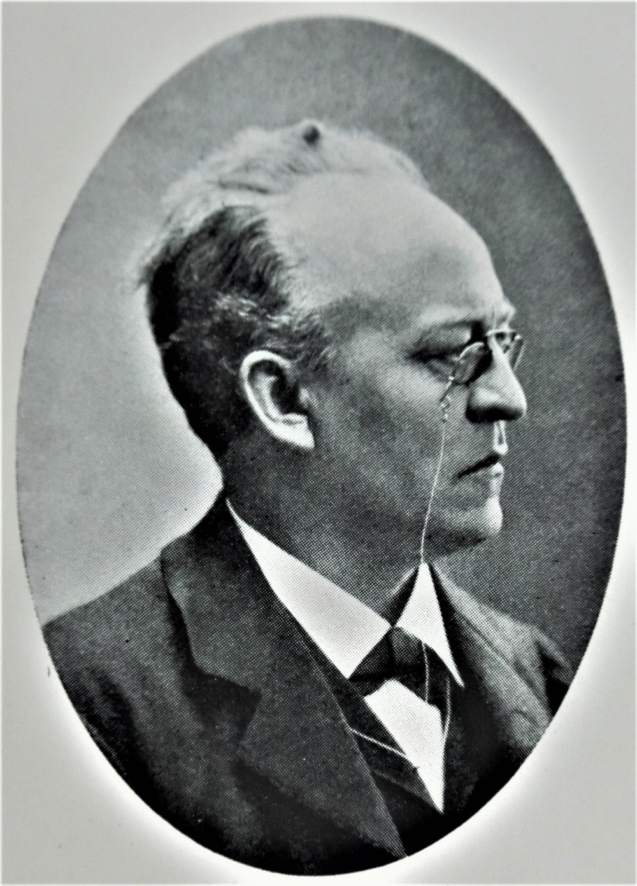
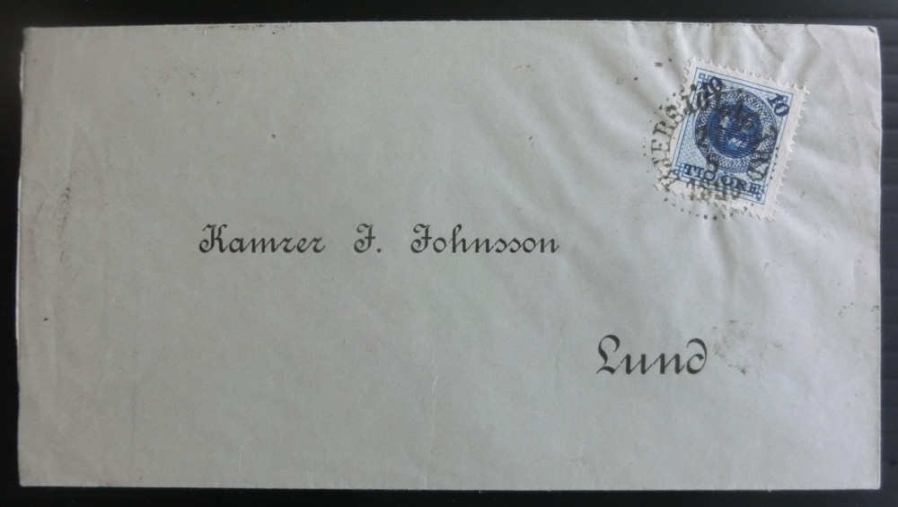
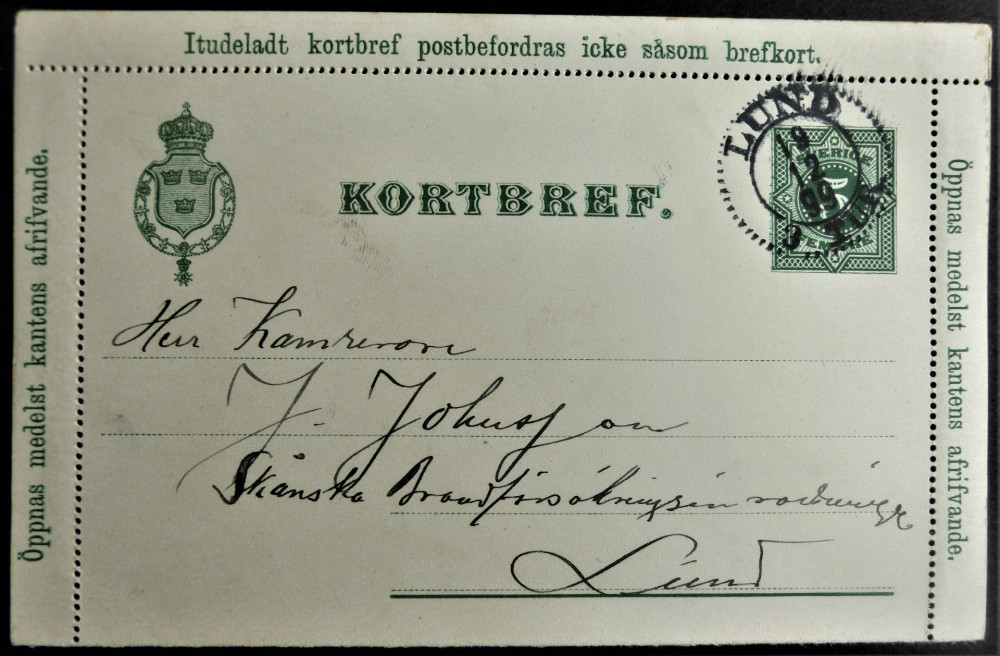
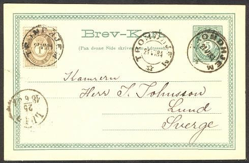
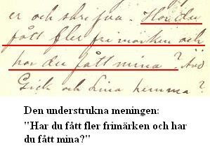
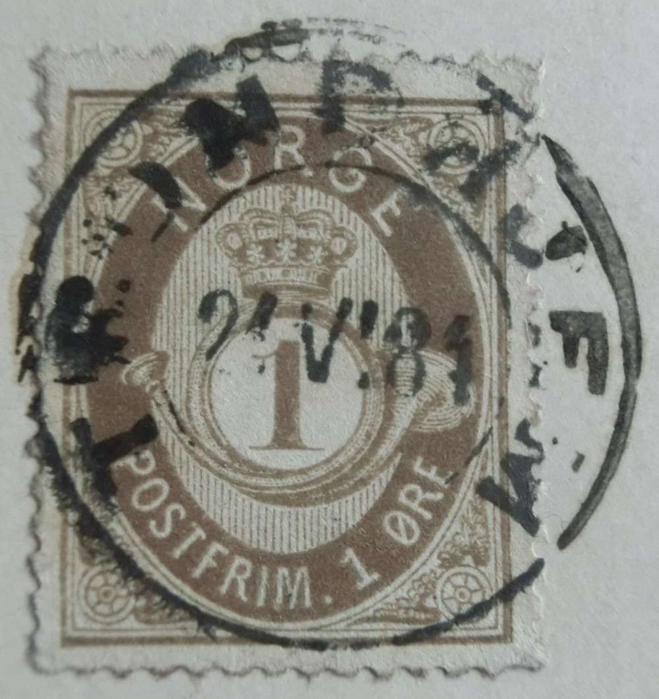

Fotografi från minnesskriften
Skånska Brandförsäkringsinrättningen 1828 - 1928
Jonas Johnsson
7/3 1851 – 15/10 1916

Bjersjölagård 27/6 1890
Jonas Johnsson föddes i Stora Råby 7/3 1851. Han gifte sig med Anna Maria Rosenblad. I yrkeslivet var han bokhållare (1871 – 1881) och kamrer (1881 – 1916) på Skånska Brandförsäkringsinrättningen (Skånska Brandförsäkrings-Inrättningen) i Lund. Jonas Johnsson var tillsammans med Ernst Ljungström initiativtagare till att grunda en förening för filatelister, som under namnet Lunds Filatelistförening kom att se dagens ljus den 21 november 1889. Jonas Johnsson var föreningens förste vice ordförande (1889 - 1901).

Ett brevkort från Norge till kamrer Jonas Johnsson i Lund
I mars 1910 flyttade Skånska brandförsäkrings-inrättningen från nuvarande Kiliansgatan 7 till ett nybyggt hus i hörnet Tegnérsplatsen – Algatan.

En intressant del av texten på brevkortets baksida

Kommentar
Avsändaren Paul måste ha skickat ytterligare två brevkort till Jonas Johnsson vid samma tidpunkt, eftersom texten på brevkortets baksida saknar inledning och det står 3) längst upp till vänster.
1-öresmärket på brevkortet
Typ: posthornsmärke med skuggat posthorn
Utgåva: 2:a utgåvan 1877 – 1878
Utgivningsdag: 1/1 1877
Stämplat: TRONDHJEM 21VI84 [= 21/6 1884]
Trycktecknik: boktryck
Tandning: 14 ½ x 13 ½
Vattenmärke: posthorn
Nyans: den är antingen mörkt brungrå (a)
eller
just brungrå (b)
Upplaga: 8 miljoner
Facitnummer (för Norge): 22

Källor
Eran Skånska Brand definitivt slut, Moritz, Ingrid, Gamla Lund Nytt 2000:2
FACIT Special Classic 2020, Facits Förlags AB, 2019
Lunds Filatelistförening 1889 - 1989, Billgren, J., Norborg, K. och Winther, T., Bloms boktryckeri AB, Lund 1989
Rättelser: På sidan 4 står det kamreren Jonas Johansson. Vid läsning av mötesprotokollet från den 13 november 1889 har det nu (2014) framkommit, att efternamnet ska vara Johnsson (utan a). På sidan 5 (under Vice ordförande) borde det stå Jonas Johnsson (inte Jonas Jonsson).
Skånska Brandförsäkringsinrättningen 1828 – 1928, Carlquist, Gunnar, Berlingska Boktryckeriet, Lund 1928
Kommentarer: I minnesskriften har man skrivit John som förnamn i stället för Jonas. Samma bild på Jonas Johnsson publicerades redan 1916 i Veckojournalen.
Copyright © Lunds Filatelistförening 2008 - 2025